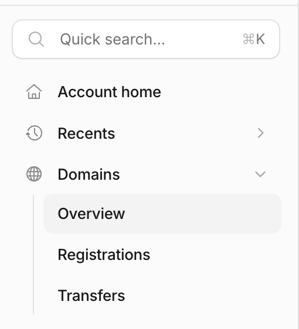
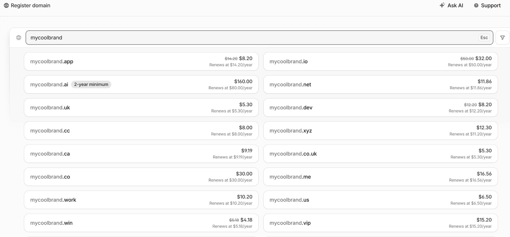
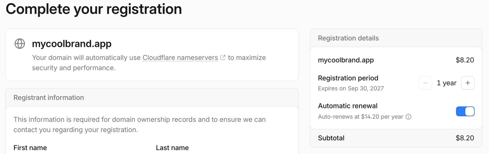
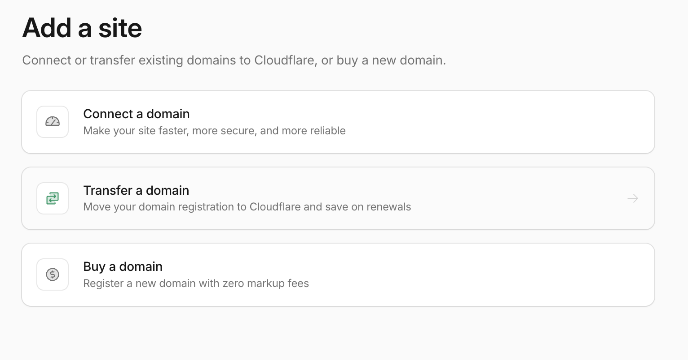
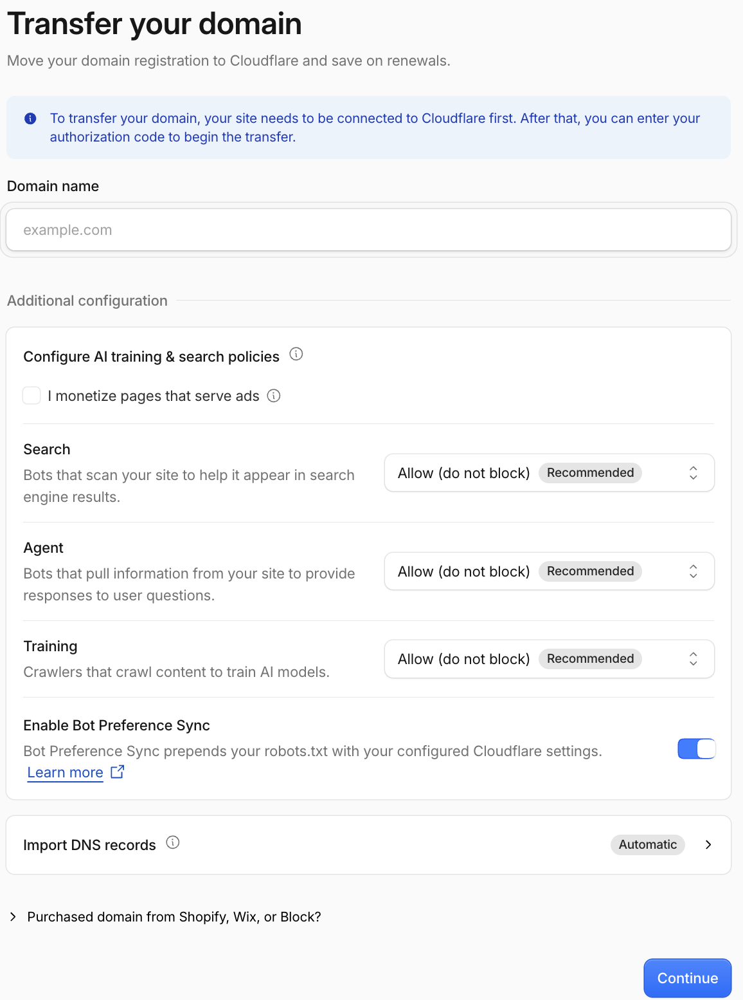
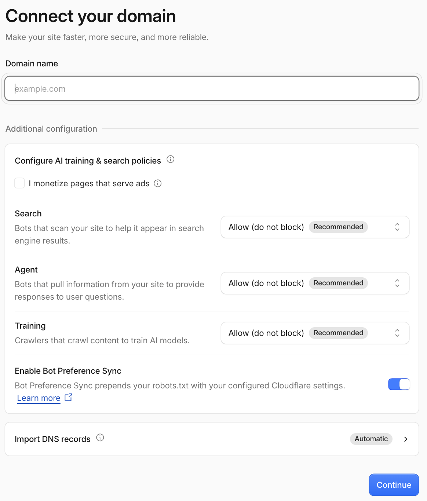

01 Что такое домен и зачем он нужен
Домен — это адрес вашего сайта в интернете: то, что человек вводит в браузере. Без своего домена сайт тоже будет работать, но по техническому адресу от хостинга, например project.pages.dev. Свой домен нужен, если:
- хотите адрес, который легко запомнить и не стыдно показать клиентам;
- нужна почта на своём домене (
hello@вашдомен.ru); - хотите, чтобы адрес остался за вами — адрес от хостинга вам не принадлежит: сменили хостинг, и адрес пропал.
Интерфейс Cloudflare и Reg.ru меняется быстро. Если у вас что-то выглядит по-другому — просто поменялась расстановка кнопок, но логика скорее всего сохранилась (выбрать имя → оплатить → домен появился в кабинете).
02 Как выбрать домен
- Короткий и легко произносимый — если приходится диктовать по буквам, это плохой знак.
- Без дефисов и цифр, если можно обойтись.
- Зона (окончание после точки, по-английски TLD):
.com— универсальный вариант,.ru/.рф— для русскоязычной аудитории,.io/.dev/.app— привычны в IT, но дороже. - Проверьте, не занято ли такое имя в соцсетях и не чужой ли это товарный знак.
03 Где купить: Cloudflare или Reg.ru
Домены продаёт регистратор (компания, которая регистрирует домен на вас и потом его продлевает). Я расскажу про 2 сервиса:
- Cloudflare — если есть карта, которой можно платить за границей. Дешевле и без сюрпризов при продлении. Зоны
.ru,.рфи.suне продаёт. - Reg.ru — если нужна зона
.ru/.рф/.suили вы хотите платить российской картой.
Домен можно купить в одном месте, а DNS (связь домена с вашим сайтом) держать в другом — ниже покажу, как это делается.
04 Покупка на Cloudflare — пошагово
- Заведите аккаунт на Cloudflare (бесплатно): dash.cloudflare.com/sign-up.
-
Откройте раздел Domains в боковом меню. Внутри три пункта: Overview, Registrations и Transfers (перенос домена из другого места). Нужна регистрация нового домена — страница «Register domain».

Domains → Overview / Registrations / Transfers -
Введите имя в поле поиска. Cloudflare покажет список зон с ценами. Крупная цена — за первый год, а под ней строка «Renews at» — сколько будет стоить продление. Смотрите именно на неё: у некоторых зон первый год со скидкой (старая цена зачёркнута), а дальше цена обычная. У части зон есть минимальный срок, например у
.ai— «2-year minimum».
Register domain → поиск и цены (Renews at — цена продления) -
Выберите зону — откроется «Complete your registration». Cloudflare сам подставит свои nameservers (адреса серверов, которые отвечают, куда вести домен), ничего настраивать не нужно. Дальше заполните данные владельца (Registrant information: имя и контакты — они нужны для записи о владельце домена), проверьте срок регистрации (по умолчанию 1 год) и переключатель автопродления (Automatic renewal) — он включён сразу, рядом указана цена продления. Внизу итог (Subtotal) и оплата.

Complete your registration → срок, автопродление, итог - Оплатите. Платёж вы вводите сами на странице Cloudflare. После оплаты домен появляется в вашем аккаунте — DNS и защита настраиваются там же.
Почему тут выгодно
Cloudflare не накручивает наценку и продаёт домены по оптовой цене регистратуры. Обычные регистраторы (GoDaddy, Namecheap и т.д.) накидывают маржу, особенно на продлении после «завлекающего» первого года.
Ориентировочные цены в год (по данным на сентябрь 2026):
| Зона | Регистрация | Продление |
|---|---|---|
| .com | $10.46 | $10.46 |
| .net | $11.86 | $11.86 |
| .org | $8.50 | $11.20 |
| .io | $32.00 | $50.00 |
| .dev | $8.20 (акция) | $12.20 |
| .app | $8.20 (акция) | $14.20 |
«Акция» — скидка на первый год, которая бывает у отдельных зон: на скриншоте выше у .app и .dev она есть. Регистратуры периодически поднимают цены — перед покупкой сверьтесь на domains.cloudflare.com/tlds.
05 Можно ли платить Cloudflare российской картой
Напрямую нельзя. Только иностранная карта (своя, если есть, или через человека за рубежом)
06 Покупка на Reg.ru
Reg.ru — крупнейший российский регистратор и по сути единственный нормальный путь получить .ru / .рф / .su. Процесс тот же: поиск имени → выбор зоны → оплата → домен появился в личном кабинете.
Ориентировочные цены в год (первый год часто дешевле продления, сверьтесь на момент покупки):
| Зона | Цена |
|---|---|
| .ru / .рф | от ~169 ₽ |
| .com | ~1 792 ₽ |
| .su | ~669 ₽ |
Оплата — без проблем: карты любых российских банков, СБП, SberPay, ЮMoney, наличные через терминалы, рассрочка «Яндекс Сплит». Для ИП и юрлиц — оплата по счёту.
07 Домен куплен на Reg.ru, а сайт на Cloudflare
Это нормально. Регистратор (где куплен и продлевается домен) и DNS (где настроено, куда ведёт домен) — разные вещи, они не обязаны совпадать. Типичная связка: домен на Reg.ru, а DNS и защита — на Cloudflare. Как переключить:
-
Добавьте домен в Cloudflare. Сейчас о домене знает только Reg.ru. Чтобы Cloudflare начал им управлять (показывать сайт, защищать его), домен нужно добавить в ваш аккаунт Cloudflare.
- Откройте
Domains → Overviewи нажмите кнопку добавления домена — откроется страница «Add a site» с тремя карточками.

Add a site → Connect a domain / Transfer a domain / Buy a domain - Выберите Connect a domain («подключить домен»). Эта карточка нужна, когда домен остаётся у прежнего регистратора, а Cloudflare только управляет им. Buy a domain — покупка нового домена (о ней выше). Transfer a domain нам не нужен: это перенос самой регистрации домена в Cloudflare, вместе с продлением.

Transfer a domain — не наш случай - Если случайно откроете «Transfer your domain», страница сама скажет: чтобы перенести домен, сайт сначала нужно подключить к Cloudflare, и только потом вводится код авторизации для переноса. Зоны
.ru,.рфи.suCloudflare вообще не регистрирует, так что для них перенос не подходит. Закройте эту страницу и вернитесь к «Connect a domain». - Откроется страница «Connect your domain». В поле Domain name впишите свой домен без
https://и безwww, напримервашдомен.ru.

Connect a domain → «Connect your domain» - Ниже блок Additional configuration — настройки для роботов, которые заходят на сайт. Их можно оставить как есть: везде стоит «Allow (do not block)» («разрешить, не блокировать»). Search — поисковые роботы, их лучше не блокировать, иначе сайт хуже найдётся в поиске. Agent — роботы, которые берут данные с сайта, чтобы отвечать на вопросы пользователей. Training — сборщики текстов для обучения нейросетей: если не хотите, чтобы ваши тексты использовали для этого, здесь можно выбрать запрет. Галочка «I monetize pages that serve ads» нужна, только если на сайте показывается реклама. Переключатель Bot Preference Sync включён — он запишет эти настройки в robots.txt (файл-подсказку для роботов).
- Import DNS records — «Automatic»: Cloudflare сам скопирует текущие DNS-записи домена (DNS-запись — строчка в «адресной книге» домена: какое имя куда ведёт). Если на домене уже работает почта или старый сайт, проверьте, что их записи попали в список: иначе после переключения они перестанут работать. У нового домена без сайта список почти пустой — это нормально.
- Нажмите Continue. Дальше Cloudflare предложит выбрать тариф — берите бесплатный Free, для сайта его хватает.
- В конце Cloudflare покажет два адреса nameservers вида
имя.ns.cloudflare.com(адреса серверов, которые будут отвечать, куда вести ваш домен). Скопируйте оба и не закрывайте эту страницу: они понадобятся на следующем шаге. У каждого домена свои адреса, чужие из интернета брать нельзя.
- Откройте
- В личном кабинете Reg.ru → управление доменом → DNS-серверы → впишите адреса, которые дал Cloudflare, вместо адресов Reg.ru.
- Подождите обновления — обычно от пары часов до суток.
- Готово. Дальше все настройки DNS уже в Cloudflare, а оплата и продление домена остаются на Reg.ru, как и были.
Что делать с доменом дальше — в гайде про деплой сайта через GitHub.
08 Итог: что выбрать
- Проект международный (
.com/.io/.devи т.п.) и есть способ оплаты — берите на Cloudflare: дешевле и без сюрпризов на продлении. - Нужна зона
.ru/.рф/.su, или хочется платить российской картой без манипуляций — Reg.ru. - Домены можно держать на разных регистраторах, а DNS у всех перевести на Cloudflare.